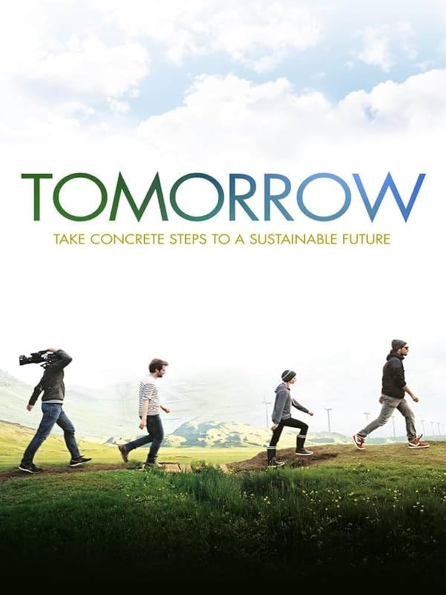

TOMORROW
Documentaire
Réalisateurs : Cyril Dion et Mélanie Laurent
Année de réalisation : 2015
Durée : 1h58
"Tomorrow" est un documentaire qui part d’une question cruciale : Face aux crises écologiques, sociales et économiques actuelles, que peut-on faire pour éviter l’effondrement de notre civilisation ? Ce film est à la fois pédagogique, engageant et en parfaite harmonie avec la mission de notre festival.
"On ne change pas le monde en combattant ce qui existe déjà, mais en construisant quelque chose de nouveau."
Cette réplique capture l’essence de "Demain", qui propose des solutions concrètes aux défis environnementaux et sociaux. Ce documentaire montre comment des initiatives locales peuvent transformer le monde de manière durable. Il inspire à agir collectivement pour construire un futur meilleur.
Réalisateurs

Cyril Dion

Mélanie Laurent
Cyril Dion
Cyril Dion est un écrivain, réalisateur, et militant écologiste français. Il est cofondateur du mouvement Colibris.
Mélanie Laurent
Mélanie Laurent est une actrice, réalisatrice et chanteuse française reconnue.
Bande annonce officielle
Réception et Impact
Le trailer de "Demain" a immédiatement capté l’attention du public. Il a également joué un rôle crucial dans la réussite du film, remportant le César du meilleur documentaire en 2016.